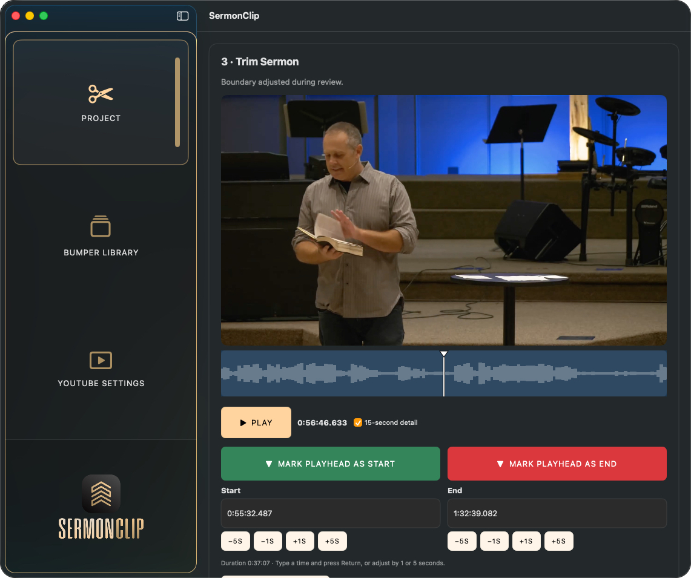
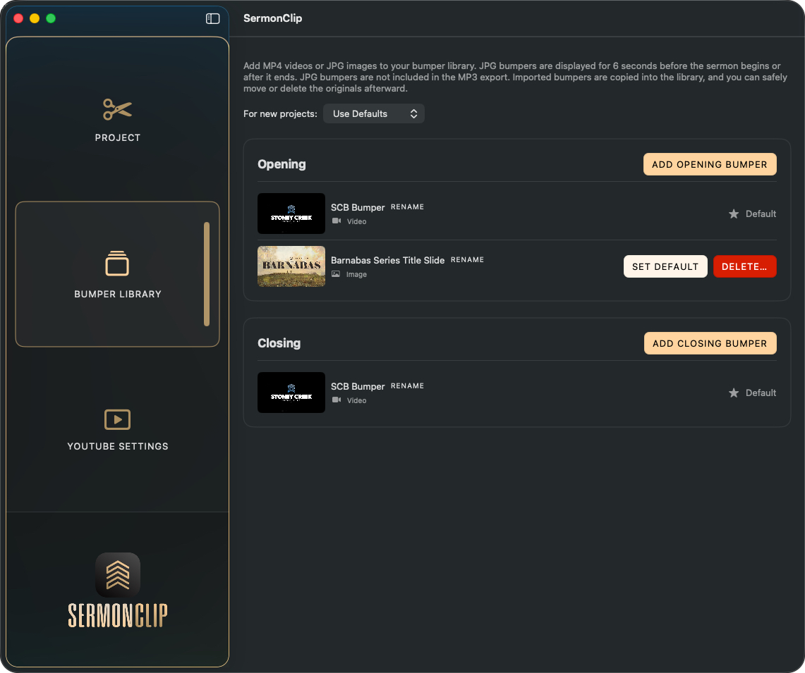
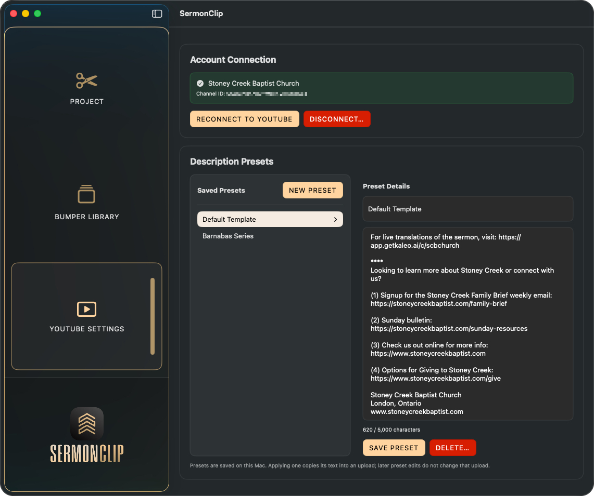

Choose Your Bumpers
Select opening and closing video or JPG bumpers, and use saved defaults from the bumper library.
For full Sunday service recordings
SermonClip lets you choose the sermon boundaries, add opening and closing bumpers, prepare subtitles, and export the resulting video and audio files.
SermonClip 1.2.1 · macOS Tahoe 26+ · Apple Silicon · Homebrew installation available
What SermonClip does
Select opening and closing video or JPG bumpers, and use saved defaults from the bumper library.
Import the full service recording, and mark exactly where the sermon begins and ends using the preview and waveform.
Import or generate subtitles, preview them over the sermon, and adjust their timing when needed.
Export MP4, MP3, and SRT files, and optionally upload the finished video, description, playlist selection, and subtitles to YouTube.
Screens from the app

Choose bumpers, select the full service recording, and set the sermon boundaries.

Store opening and closing video or JPG bumpers and choose the defaults used for new projects.

Connect a YouTube channel and manage reusable description presets for uploads.
Project settings
SermonClip stores your bumper library, description presets, thumbnails, and YouTube preferences locally so they are available the next time you open the app.
Read the YouTube user guideLatest release
Apple Silicon Mac application for macOS Tahoe 26 or later. Download the DMG or install and update with Homebrew.
{kind=link}
{kind=link}
{kind=link}